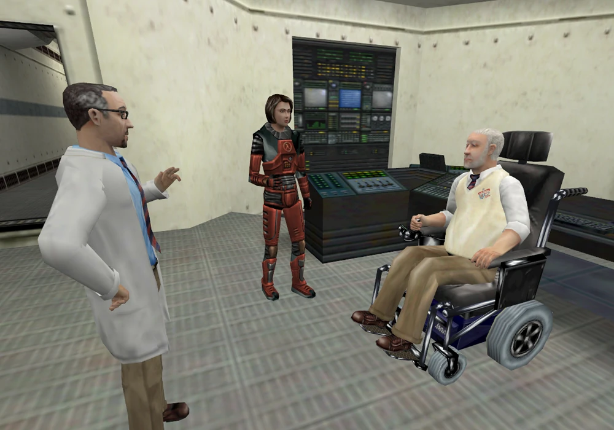
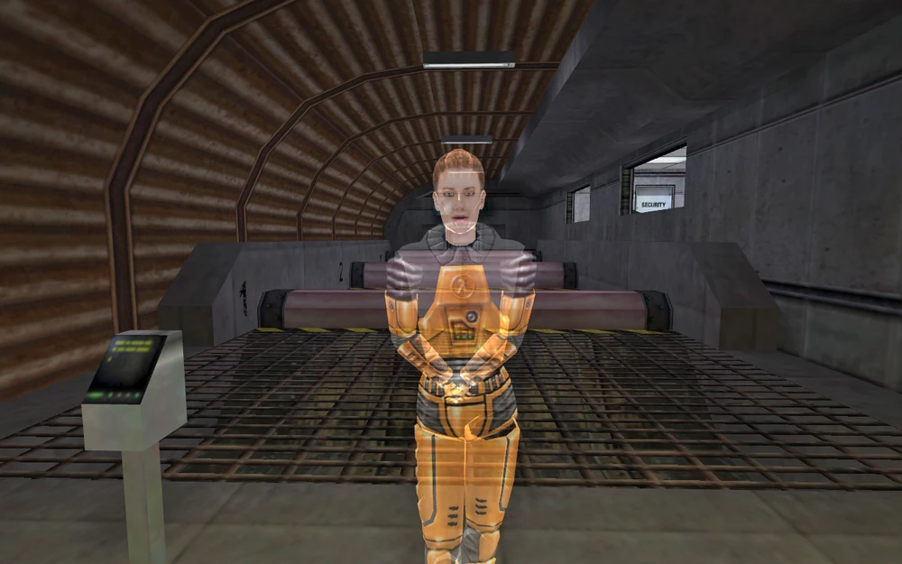
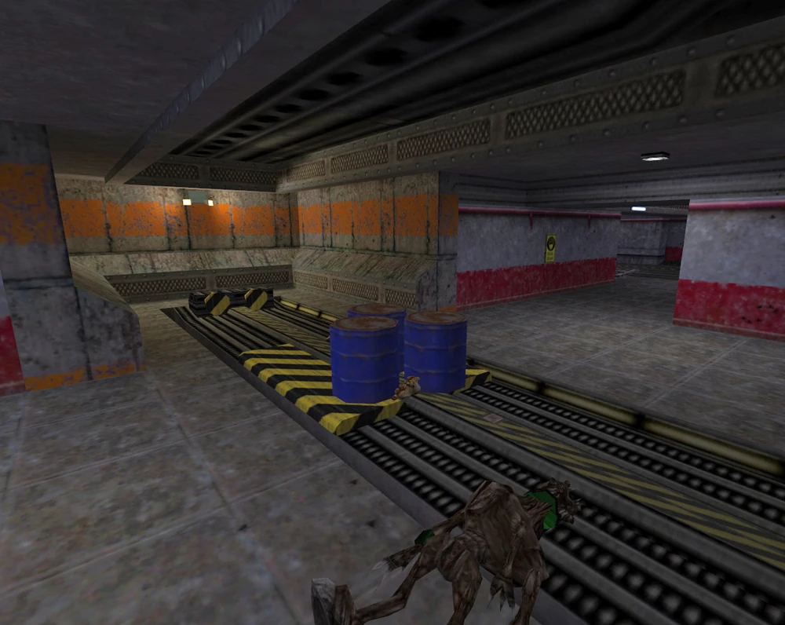
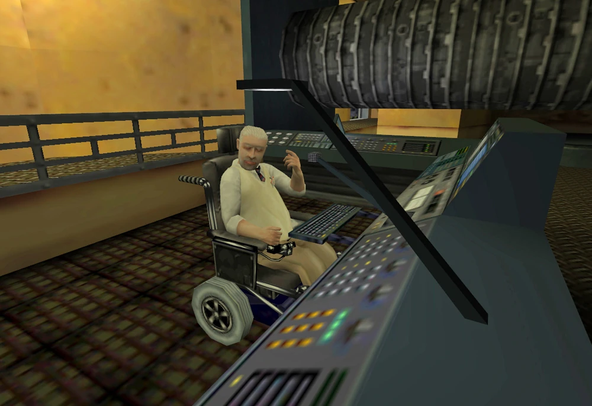
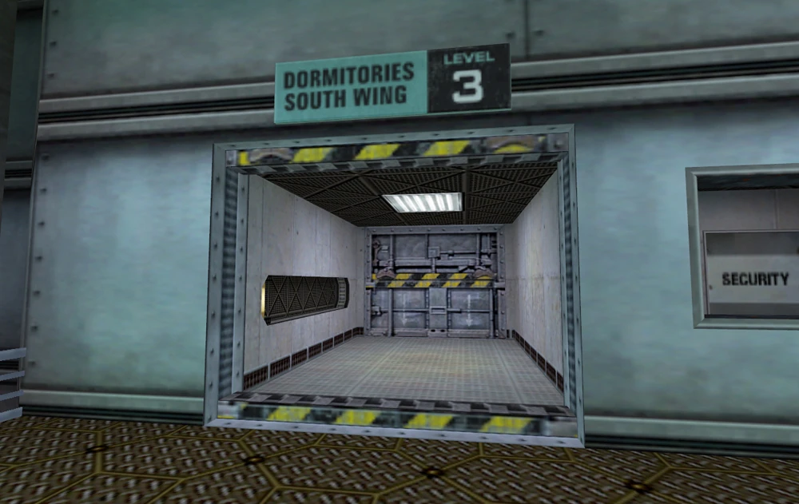
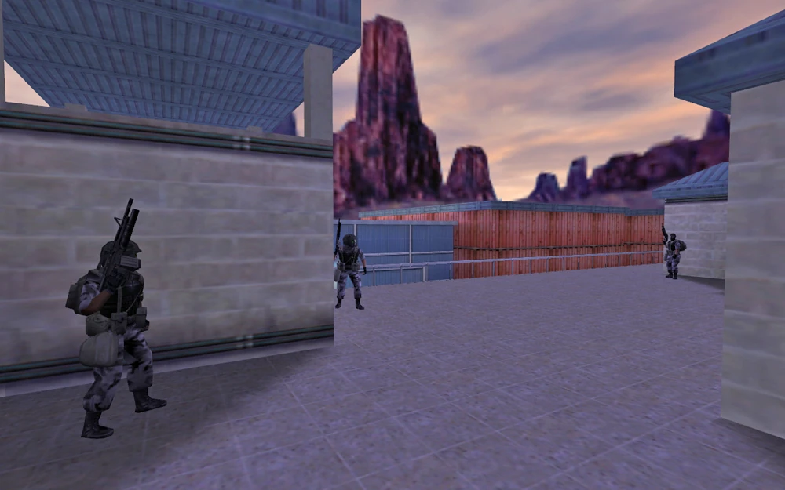
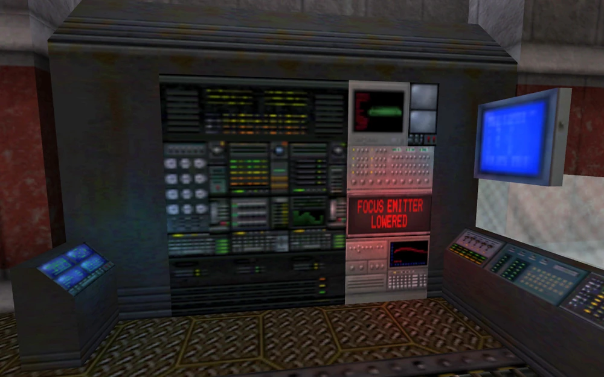
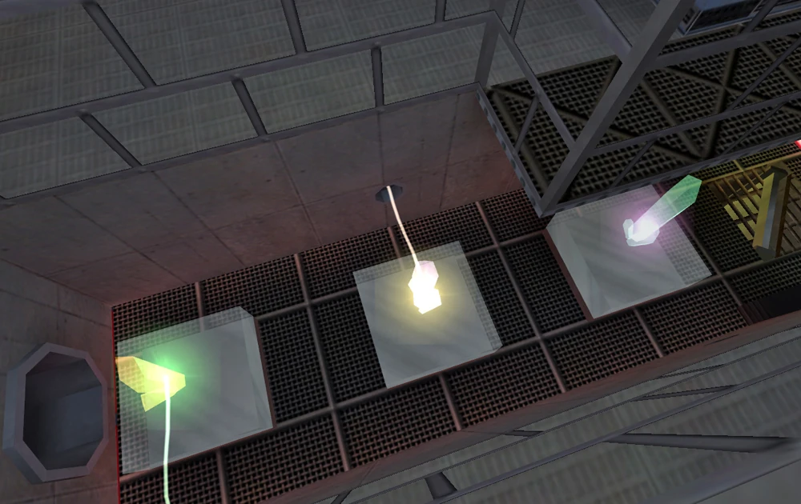
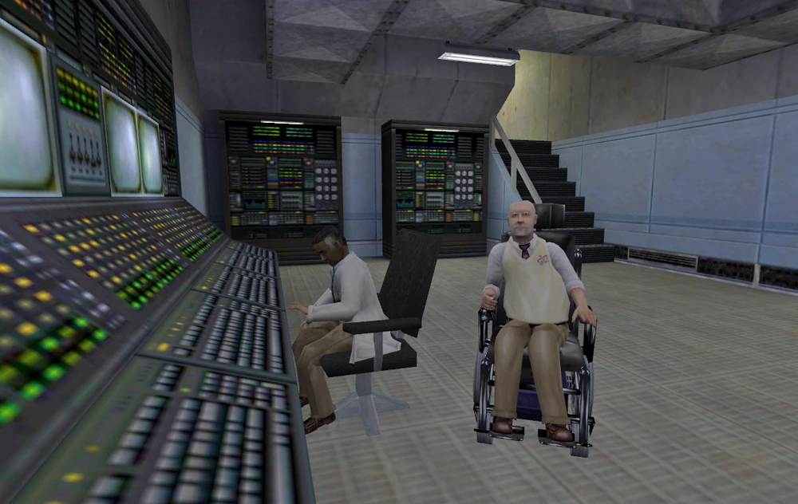
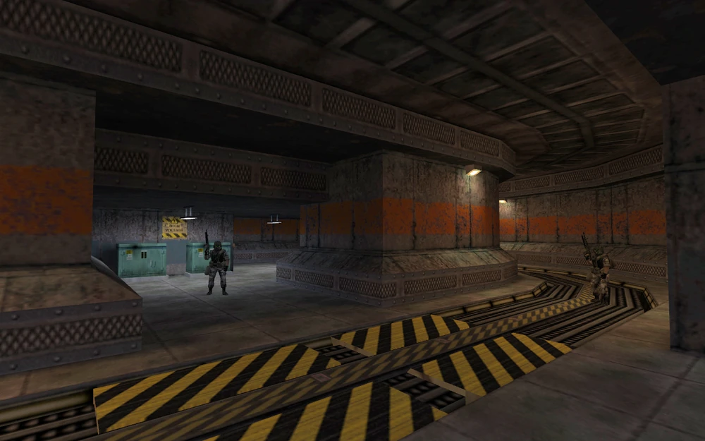

ผลกระทบอีกด้านของอุบัติการณ์ Black Mesa ผ่านสายตาของสองนักวิทยาศาสตร์หญิง ดร.จีน่า ครอส และ ดร.โคเล็ตต์ กรีน แห่งศูนย์วิจัย Anomalous Materials

ในบทแรกนี้ จีน่า ครอส และ โคเล็ตต์ กรีน มีหน้าที่ส่งมอบตัวอย่างคริสตัลทดสอบให้กับ กอร์ดอน ฟรีแมน และทำการเปิดใช้งานเครื่อง Anti-Mass Spectrometer ก่อนที่จะเกิด "อุบัติการณ์" (Resonance Cascade) ขึ้นเพียงไม่กี่อึดใจ

จีน่า ครอส และ โคเล็ตต์ กรีน ต้องคุ้มกัน ดร.โรเซนเบิร์ก ฝ่าดงอันตรายผ่านพื้นที่ Hazard Course (ศูนย์ฝึกซ้อม Sector A) เพื่อขึ้นสู่พื้นผิวและส่งสัญญาณขอความช่วยเหลือจากกองทัพ

ครอส, กรีน และโรเซนเบิร์กขึ้นมาถึงพื้นผิวสำเร็จโดยมีเป้าหมายคือการเข้าถึงศูนย์สื่อสารผ่านดาวเทียม แต่ทว่าประตูหน้าศูนย์กลับถูกล็อก ทำให้ครอสและกรีนต้องอ้อมไปทางโกดังใกล้เคียงเพื่อเข้าทางประตูหลังที่ไม่ได้ล็อก เมื่อเข้าไปด้านในได้ พวกเธอต้องปรับทิศทางจานดาวเทียมด้วยตัวเอง ทำให้โรเซนเบิร์กสามารถติดต่อกองทัพได้สำเร็จ ในขณะที่ครอสและกรีนต้องมุ่งหน้ากลับลงไปที่ Sector C

ครอสและกรีนกลับมาที่แผนก Anomalous Materials และสมทบกับ ดร.เคลเลอร์ เขาตัดสินใจว่าวิธีที่ดีที่สุดคือการเปิดระบบสนามพลังหน่วง (Dampening Fields) อีกครั้ง ซึ่งเขาเชื่อว่าจะหยุดเหตุการณ์ Resonance Cascade ได้ ทั้งสองคนเดินทางผ่านศูนย์วิจัยและสามารถรีเซ็ตล็อกของสนามพลังหน่วงทั้งระบบหลักและระบบรองได้สำเร็จ
แต่ทว่าสนามพลังกลับล้มเหลวลงในเวลาต่อมา ดร.เคลเลอร์ค้นพบว่าความล้มเหลวนี้เกิดจาก "การจงใจแทรกแซง" จากอีกฝั่งของรอยแยกมิติ และตระหนักได้ว่าเอเลี่ยนเหล่านี้อาจไม่ได้หลุดมาที่นี่ด้วยความบังเอิญ

เคลเลอร์คิดแผนที่จะสร้าง "การย้อนกลับของการสั่นพ้อง" (Resonance Reversal) โดยใช้เครื่องส่งสัญญาณระบุตำแหน่งต้นแบบ (Prototype Displacement Beacon) ใน Gamma Labs แต่เขาจำเป็นต้องมีดาวเทียมอยู่บนวงโคจรก่อนจึงจะทำตามแผนได้ ศูนย์ปล่อยดาวเทียมพร้อมดำเนินการ แต่ติดที่กองทัพได้สั่งปิดน่านฟ้า หากจะยกเลิกการปิดน่านฟ้า ต้องใช้รหัส All-Clear
เคลเลอร์, กรีน และครอส จึงเดินทางไปยังหอพักชั้น 3 เพื่อตามหา รปภ. ที่ถือรหัสนี้ ภารกิจถูกขัดขวางโดยทหารหน่วย HECU ที่กำลังไล่สังหารเจ้าหน้าที่ ในที่สุดพวกเธอก็พบ รปภ. และได้รหัสมา ทั้งสามคนจึงออกเดินทางไปยังศูนย์ควบคุมการจราจรทางอากาศของ Black Mesa บนพื้นผิว

ครอสและกรีน หลังจากฝ่าฟันการต่อสู้กับทหาร HECU หลายระลอก และสามารถสอยเฮลิคอปเตอร์ V-22 Osprey ไปได้ พวกเธอก็ยึดอาคารควบคุมการจราจรทางอากาศได้สำเร็จ พวกเธอจัดการป้อนรหัส All-Clear และยกเลิกการปิดน่านฟ้าของกองทัพ จากนั้นจึงกลับไปหาเคลเลอร์และมุ่งหน้ากลับลงไปใต้ดินเพื่อหาทางไปที่ Gamma Labs

ภารกิจต่อไปคือการยกเครื่องส่งสัญญาณระบุตำแหน่งต้นแบบขึ้นสู่พื้นผิวด้วยระบบแมนนวล เคลเลอร์มาถึงพื้นที่ห้องแล็บหลักแล้ว แต่ไม่สามารถยกเครื่องขึ้นได้เนื่องจากมีสิ่งกีดขวาง หลังจากลอบเข้าแล็บผ่านช่องระบายน้ำ ครอสและกรีนต้องเดินทางผ่านชั้นล่างของแล็บ ปะทะกับทั้งทหาร HECU และเอเลี่ยนจากมิติ Xen ตลอดทาง จนกระทั่งพวกเธอไปถึงตัวเครื่อง เคลียร์สิ่งกีดขวาง และยกเครื่องส่งสัญญาณขึ้นไปได้สำเร็จ

ครอสและกรีนกลับมาหาเคลเลอร์ เขาได้มอบหมายภารกิจให้ไปเปิดระบบ Beam Matrix ซึ่งเป็นแหล่งพลังงานที่จำเป็นสำหรับเครื่องส่งสัญญาณต้นแบบ พวกเธอต้องลงลิฟต์ไปยังแล็บกักกันเอเลี่ยน ซึ่งตอนนี้ถูกครอบครองโดยพวกเอเลี่ยนไปแล้ว
พวกเธอไปถึง Beam Matrix และพยายามเปิดใช้งานมัน ในขณะเดียวกันก็ต้องคอยป้องกันระบบจากพวก Vortigaunts และ Grunts ที่เทเลพอร์ตเข้ามาอย่างต่อเนื่อง ในที่สุด Beam Matrix ก็ทำงาน ครอสและกรีนจึงกลับไปหาเคลเลอร์ที่กำลังเตรียมการขั้นสุดท้าย

ครอสและกรีนถูกบีบให้ต้องป้องกันเครื่องส่งสัญญาณจากการโจมตีของเอเลี่ยนหลากหลายชนิด รวมถึงยาน Manta Ray ท่ามกลางการต่อสู้นั้น ทั้งสองตัวละครถูกดึงเข้าไปในสภาวะมิติบิดเบี้ยว (Harmonic Reflux) ในระหว่างเหตุการณ์นี้ จะได้ยินเสียงของ ดร.โรเซนเบิร์ก เตือนว่าเขา "ไม่สามารถเปิดพอร์ทัลไว้ได้นานกว่านี้แล้ว" (เชื่อมโยงกับตอนที่บาร์นี่เดินทางไปในมิติ Xen ในภาค Blue Shift)
ดร.ครอส และ ดร.กรีน กลับมาได้อย่างปลอดภัย และ ดร.เคลเลอร์ ก็แสดงความยินดีกับความสำเร็จ การย้อนกลับของการสั่นพ้องน่าจะส่งผลให้ Resonance Cascade อ่อนกำลังลง อย่างไรก็ตาม ยังคงเป็นปริศนาว่าเหล่าดอกเตอร์จะรอดพ้นจากการระเบิดของนิวเคลียร์ในตอนจบของภาค Opposing Force ไปได้หรือไม่

นี่คือบทพิเศษของ Half-Life: Decay ในบทนี้ผู้เล่นจะได้รับบทเป็น Vortigaunts สองตัวที่มีชื่อรหัสว่า "Drone Subjects" X-8973 และ R-4913 พวกมันต้องทวงคืนตัวอย่างคริสตัลที่ถูกใช้ในการทดสอบ (และถูก G-Man ขโมยไป) เพื่อนำกลับไปให้ Nihilanth ผู้นำของพวกมัน
สิ่งที่น่าสนใจคือ ด่านนี้เชื่อมต่อกับโรงจอดรถที่เห็นในช่วงท้ายของภาค Opposing Force ซึ่งเป็นสถานที่ที่ระเบิดนิวเคลียร์ถูกกู้โดย Adrian Shephard และถูก G-Man เปิดระบบการทำงานใหม่อีกครั้ง